2019.04 ~ 2019.12
국산 IoT 플랫폼인 모비우스를 이용한 공장 재고 관리 및 재고량 분석을 위한 서비스 제공 프로젝트입니다.
클라우드 내 mysql 데이터를 이용해 Grafana를 통한 창고 환경 시각화 및 Slack 메신저를 통한 환경 변화 알림 서비스를 개발하였습니다.
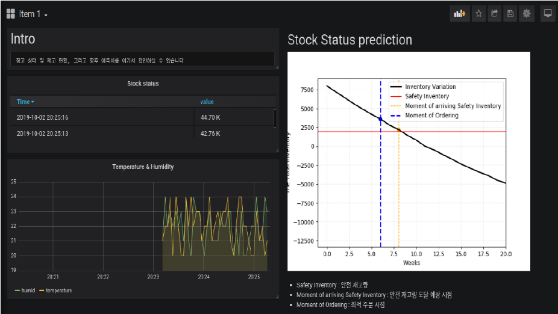
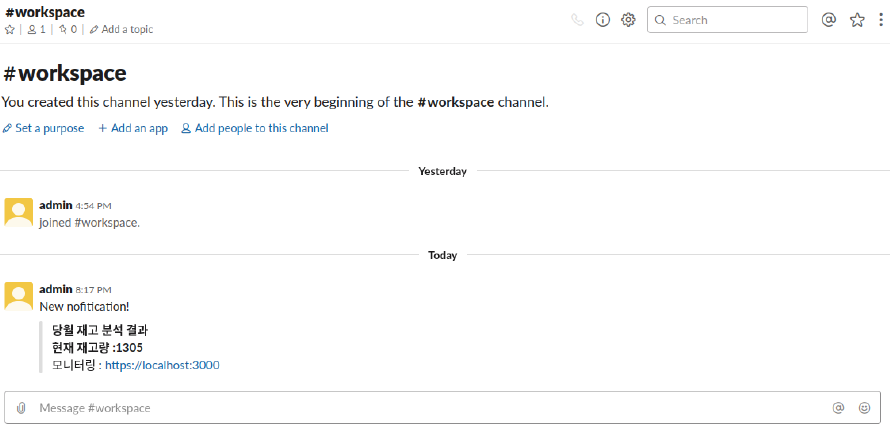
2020.04
공공 데이터 포털의 API를 이용한 재난 문자 조회 / 이메일을 통한 알림 서비스
Flask를 통한 웹 서버 구축 및 SQLite3를 이용한 DB를 구축하였습니다.
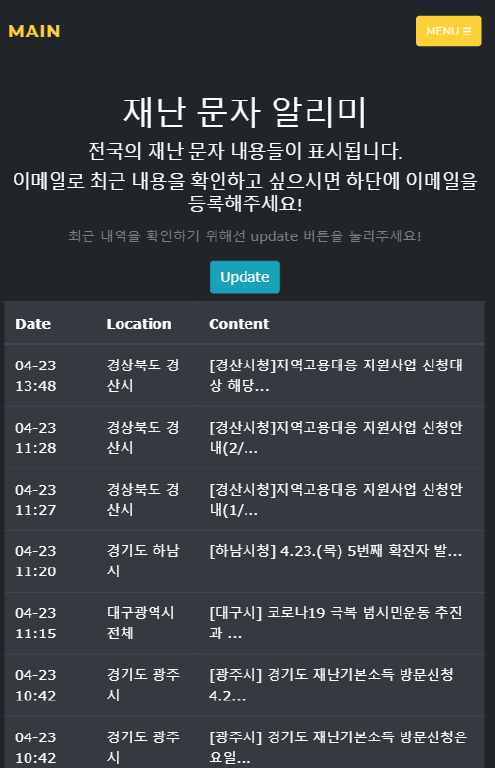
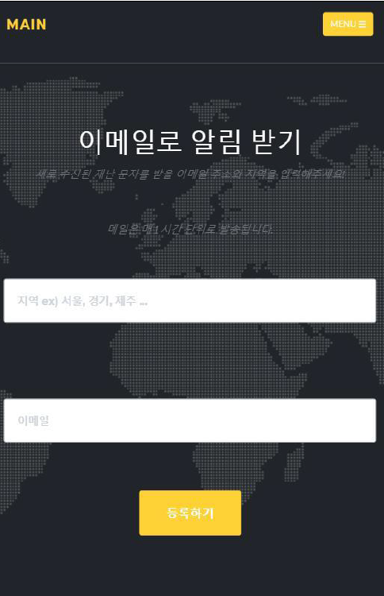
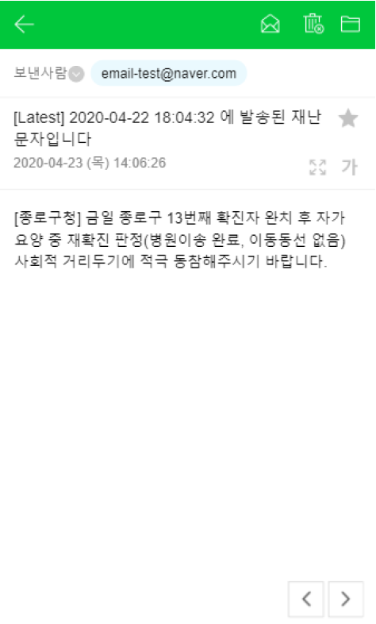
2020.03 ~ 2020.04
모바일 어플리케이션 대신 웹 플랫폼 상에서 사용할 수 있는 Deep Photo Style Transfer 서비스
이미지의 학습 및 변환 작업, 반응형 프론트 생성 및 데이터베이스 관리를 하였습니다.
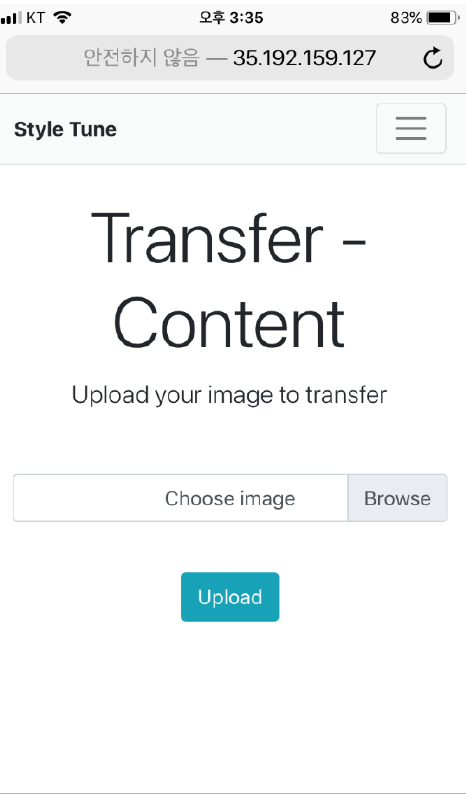
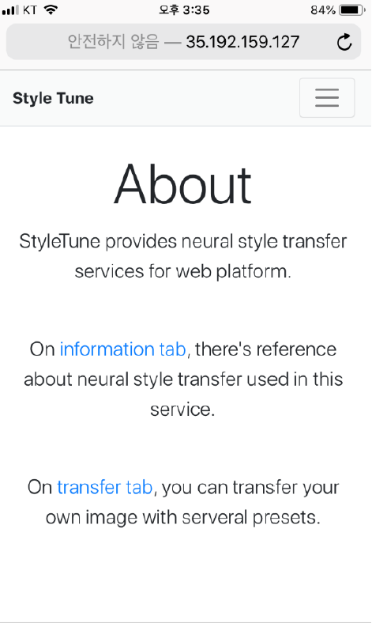
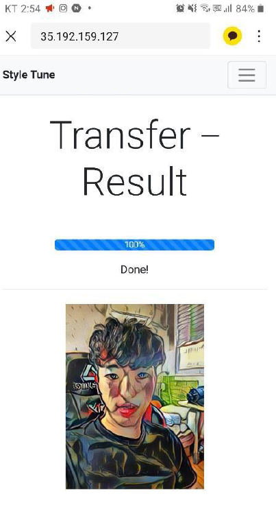
2020.09 ~ 2020.10
사용자 성향 기반 카드 추천 및 사용자가 선택 / 사용 중인 카드의 주변 혜택 표시 서비스
Kakao map api 호출을 통한 지도 상 가쟁점 표시 및 점수 기반 카드 추천 서비스를 개발하였습니다.
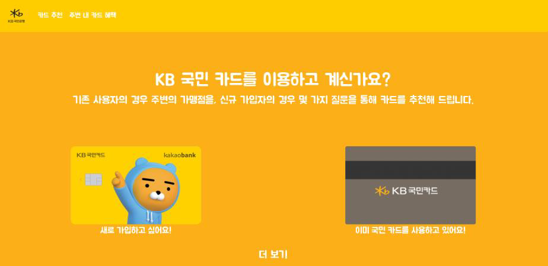
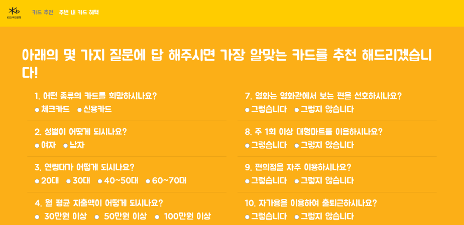
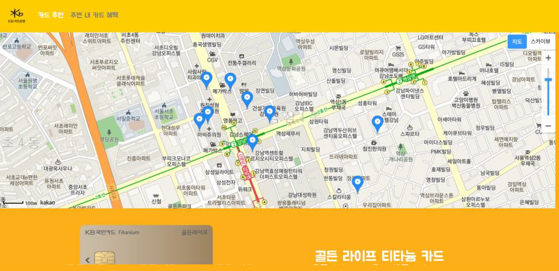